Elisp is the kernel.
The run controller, typed tool registry, permission policy and journal live in lib/. There is no second agent implementation in another language.
;; No sidecar. No opaque agent runtime.
Yeah, Emacs Agent Harness
Y · E-macs · A-gent · H-arness — and the Y is the Y-combinator.
The harness is written in Emacs Lisp. A dedicated Emacs runs the tools, permissions and session journal; your editing Emacs connects through an explicitly approved bridge and stays responsive.
v0.3.0 The kernel asks only what matters: a read that changes nothing is not asked about. A kernel, not yet a complete product.
Fix the failing canary and show me the diff.
tests/checks/check-session-log-append-only.el
lib/yeah-session.el
Approve guarded edit?
once · session · denyPASS — canary repaired
;; The environment is people.
Emacs is a place people invested themselves in for decades: packages the community wrote, configurations sharpened for years, habits that became muscle memory. The new era should not demand leaving that world behind.
Live buffers, your own functions and documentation, your LSP's diagnostics, your permissions. The environment's inheritance is the agent's starting capital, not its background.
The same kernel installs on a bare CI Emacs and on an Emacs inhabited for twenty years. Inheritance is a multiplier, not a prerequisite — what travels is the environment's capacity to be used.
A service Emacs runs the long turn so your editor never waits; the model, the permissions and the live buffers stay yours.
The Y is the Y-combinator: person → environment → agent → environment. Yeah repairing its own canary is the modest, measurable form of that cycle.
The loop is the shape of the delegation: a child run with its own journal, its own tools and its own depth.
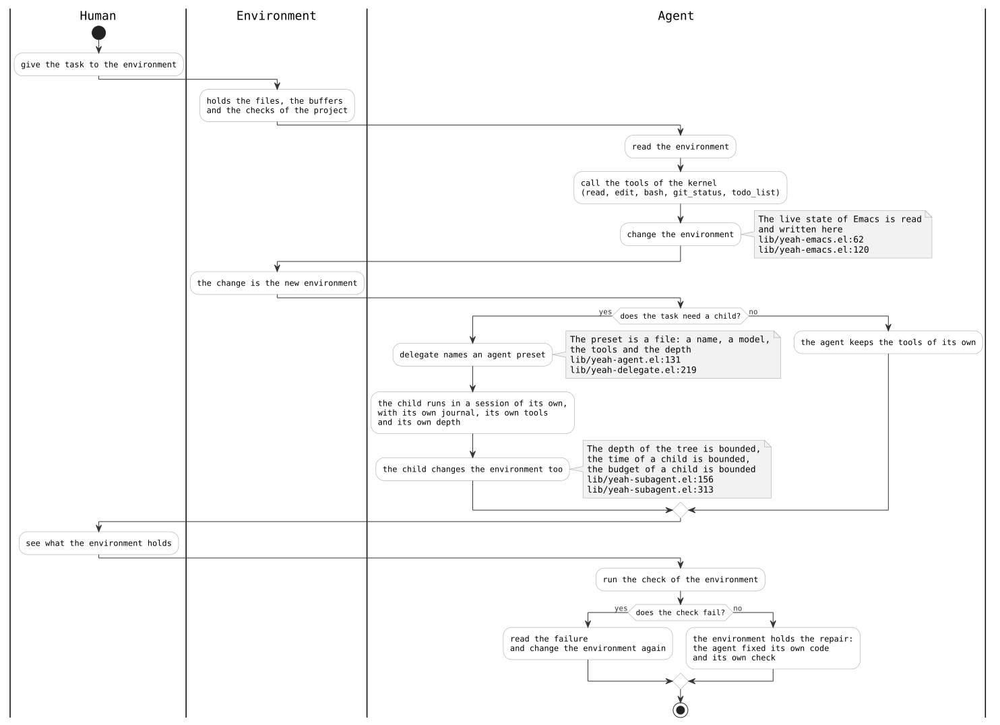
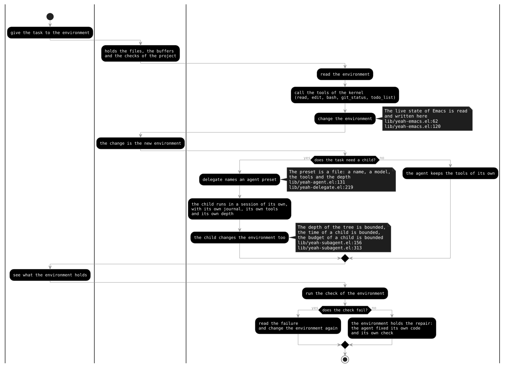
;; A check that cannot fail is a comment; unknown is not pass. Read the whole vision.
;; Three commitments, enforced by the kernel.
The point is not another chat window. It is an agent whose execution, effects and history remain visible to the person running it. One turn of the loop, end to end: the model proposes a call, the registry checks it, the policy decides whether it may run, and the journal keeps what happened.
The run controller, typed tool registry, permission policy and journal live in lib/. There is no second agent implementation in another language.
Model-originated tools pass through argument validation and last-matching permission rules. Plan and Build are profiles, not different execution engines.
Context, interface state, approvals, cost and recovery are projections of append-only JSONL events. Compaction adds events; it does not erase history.
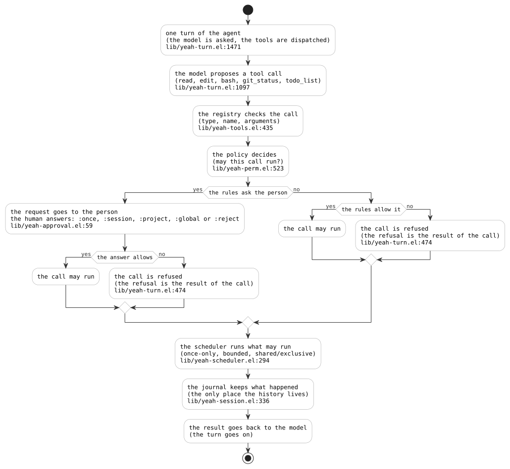
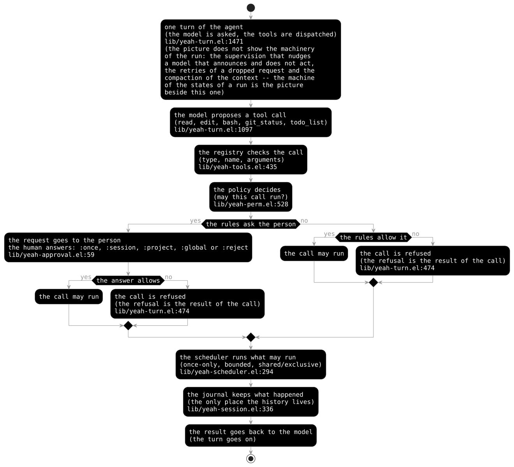
lib/yeah-state.el). The names of the tools in the diagrams are the names the model calls them by.;; An environment people already invested in.
Emacs holds decades of community packages and years of your own configuration. Yeah is designed to start from that inheritance: the agent becomes a participant in the environment you built, rather than a shell scraping files and process output.
The bridge is the only path to the live state of your Emacs, and it is a capability you approve on purpose — not a scraping of files and process output.
Read live buffers through the explicitly approved emacsclient bridge, including work that exists only in the editor.
Functions, documentation, source and Info become agent context. The tool does not have to guess how Emacs works.
Exact old text and modification-tick checks reject stale edits. A logical change becomes one native undo step.
Use Eglot and Flymake diagnostics, then verify Elisp with check-parens, byte compilation and ERT.
Magit, Org, project.el, Dired and TRAMP belong in the same environment, not in a parallel plugin universe.
Durable, versioned events support projections and recovery without turning the session into opaque process state.
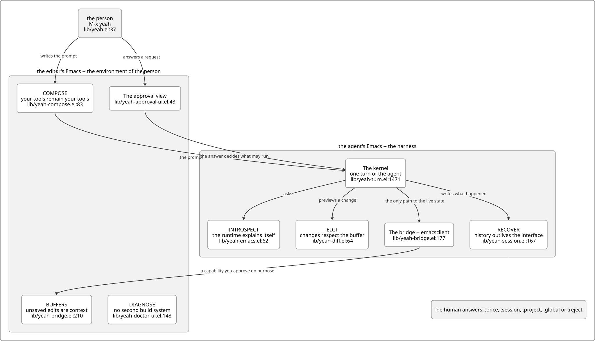
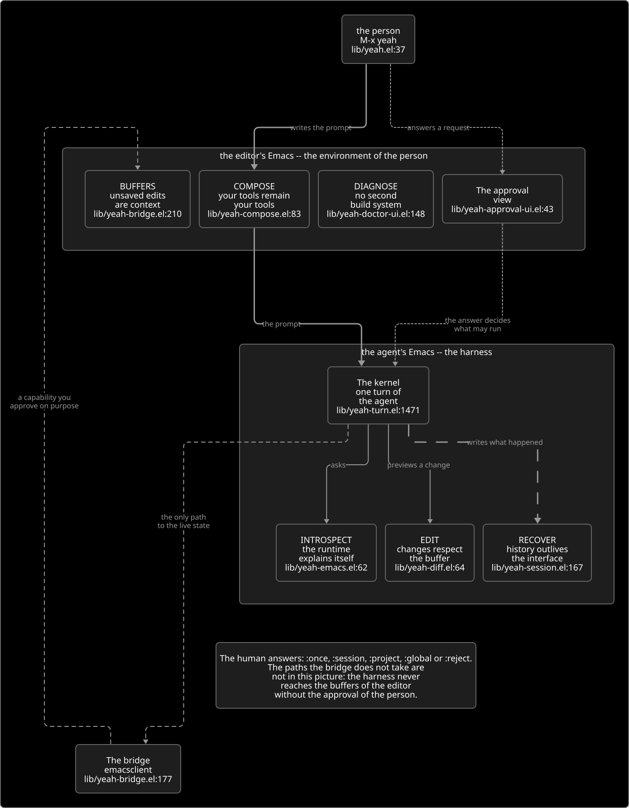
;; Parity with mature harnesses is a goal to measure by completed tasks, not a feature to claim by checklist.
;; Different drivers. The same semantic events.
Human, ACP, MCP and batch drivers submit to the same run controller. Placement can change process ownership and who answers approvals; it cannot change the event sequence. The controller is the only component that advances a run; the interfaces and the tests submit commands to it.
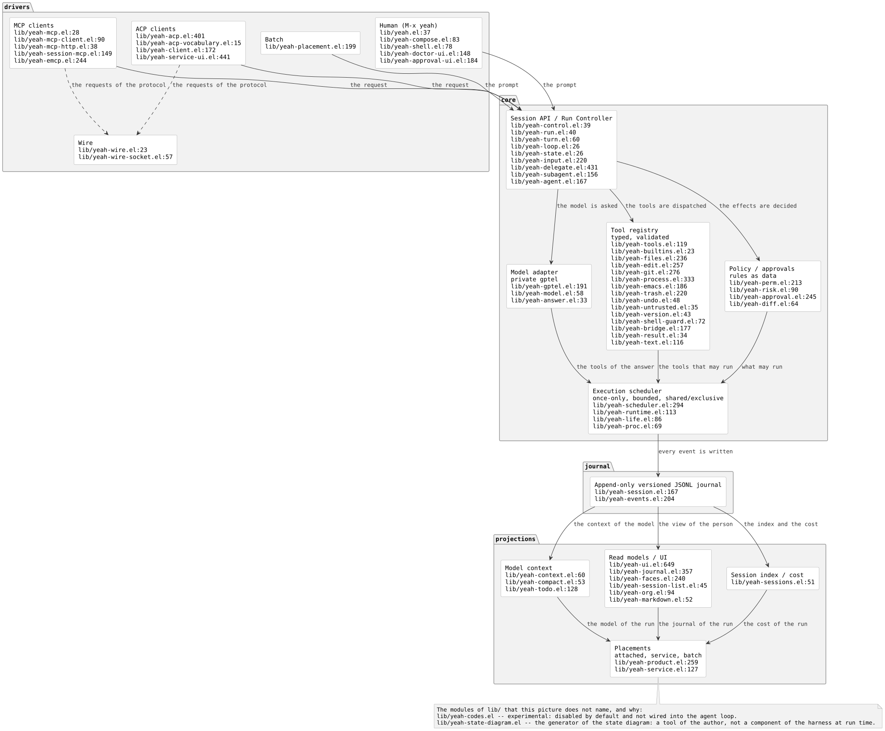
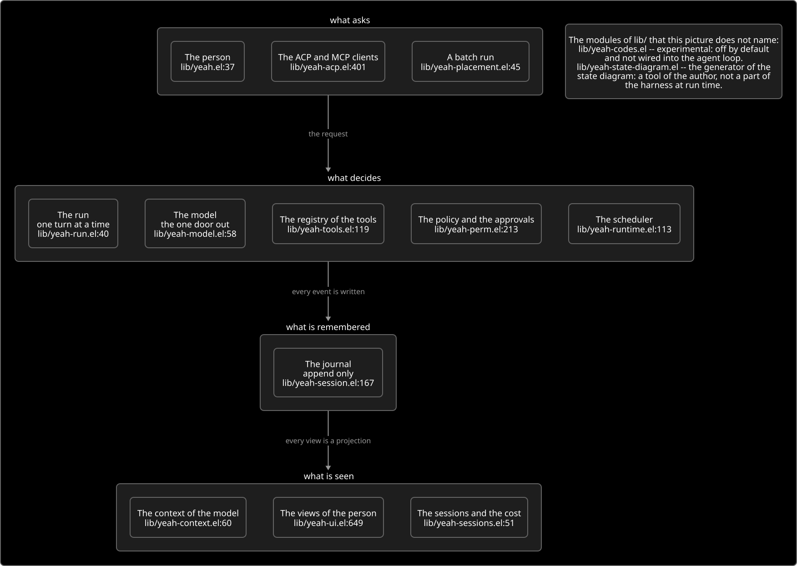
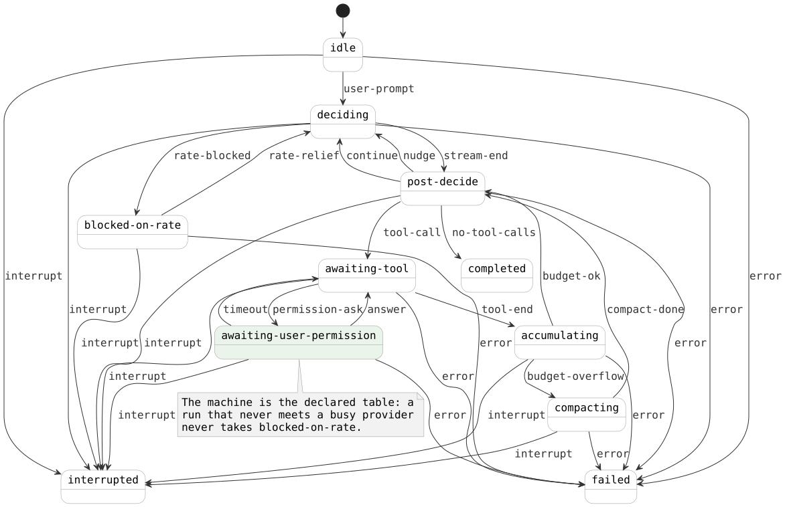
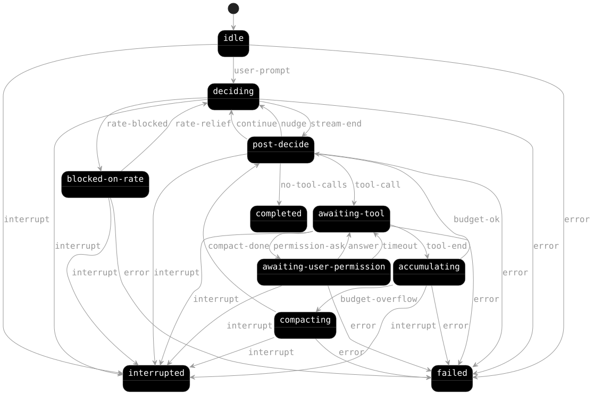
#+STARTUP: content
Protocols and delegation transport the kernel; they do not conceal missing execution. A completed stage still proves only its stated checks.
Contracts pinned, experimental evaluation quarantined, failures bounded.
Read, guarded edit/write, asynchronous jobs, diagnostics and artifacts.
Usage calibration, asynchronous compaction, pruning and corrupt-tail recovery.
Persistent pending input, steering, cancellation, nudges and deadlines.
The interactive path works against a live provider; clean installation from the published repository is verified. v0.3.0 carries the permissions the kernel asks about.
Stdio and local socket servers; socket cancellation preempts a prompt; a third-party client is verified with a fake model.
Attached, service and batch share one event stream; the bridge is checked against a live Emacs server.
File-based agent presets and the fixed-point demonstration (one child repairing a Yeah canary) are verified with a live model. Parallel children, the cheaper child model and the Org projection remain open.
;; The road to 1.0 includes live wire providers, daily-use validation and measured task success. Read the full plan.
;; Alpha software. Read the open gate above first.
Target: Emacs 30.2 with gptel and a configured model backend. Keep
credentials in your normal Emacs configuration, never in the repository or session log.
The harness runs in its own Emacs process; your editor reaches it through the bridge.
(require 'package-vc)
(package-vc-install
'(yeah :url "https://github.com/11111000000/yeah.git"
:lisp-dir "lib"))emacs -Q --batch -l install/yeah-bootstrap.elConfigure the gptel backend, model and key through your normal Emacs mechanism.
Run M-x yeah-doctor and inspect local diagnostics.
Start with M-x yeah; choose Plan for read-oriented work or Build for approved effects.
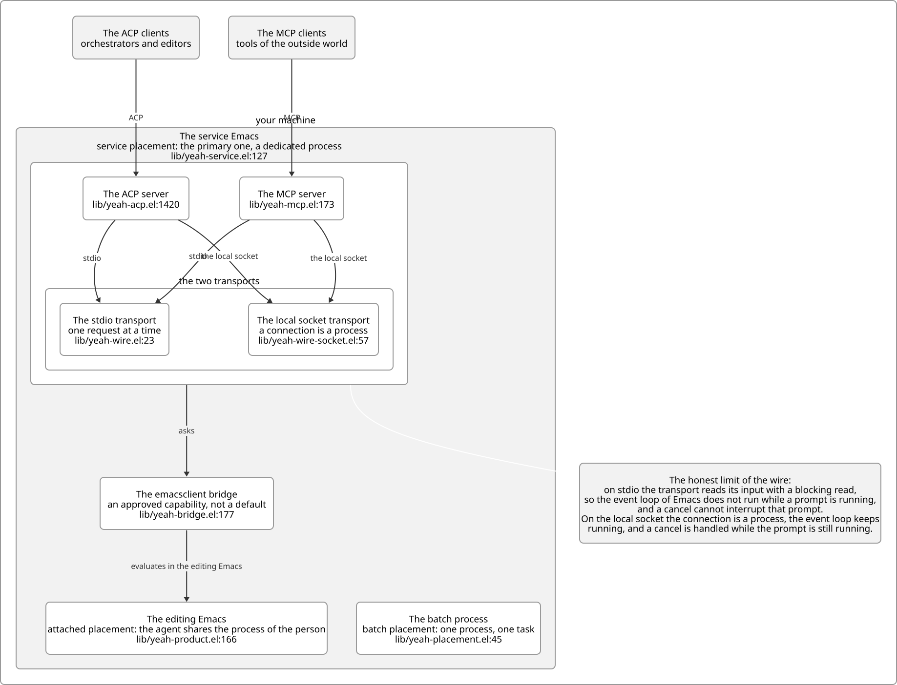
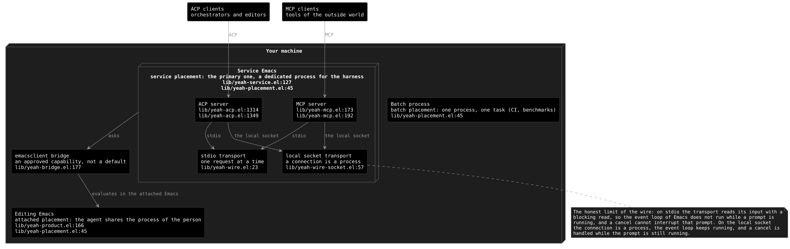
;; The bootstrap installs the supported gptel revision and Yeah through package-vc. Report failures before treating the published-repository installation as supported.
;; Checks that can fail.
Every claim needs a control that breaks its subject. A check that cannot fail is a comment; unknown is never pass.
./scripts/dev byte-compile-all
./scripts/dev ert tests/unit/*.el
./scripts/dev check tests/checks/*
./scripts/dev map
./scripts/dev run
./scripts/dev gate![The nine packages of the kernel of Yeah around one knot: the journal and its projections, the control of a run, the model adapter, the tools and the registry, the rights and the approvals, the protocols and the wire, the interface and the product, the delegation and the subagents, and the placements and the plumbing. Every card says how many modules the package holds, how many packages it needs and how many packages need it: every package reaches every other one, and there is no layer to speak of.](assets/diagrams/code-packages-light.svg)
![The nine packages of the kernel of Yeah around one knot: the journal and its projections, the control of a run, the model adapter, the tools and the registry, the rights and the approvals, the protocols and the wire, the interface and the product, the delegation and the subagents, and the placements and the plumbing. Every card says how many modules the package holds, how many packages it needs and how many packages need it: every package reaches every other one, and there is no layer to speak of.](assets/diagrams/code-packages-dark.svg)
;; Read-only.
;; The frame answers the same keys Emacs does.
The page is a frame, so it takes the keys a frame takes. Press M-x to reach the minibuffer, C-s to search, C-x b to switch buffers.
;; The minibuffer knows a handful of commands: yeah, yeah-doctor, open-file, find-file, switch-to-buffer, toggle-theme, split-window-below. A name it does not know is refused the way Emacs refuses it: ‘nope’ is not a valid command name.